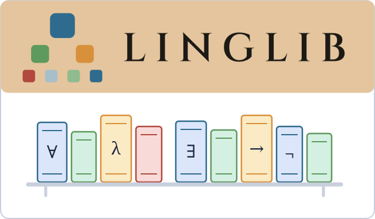
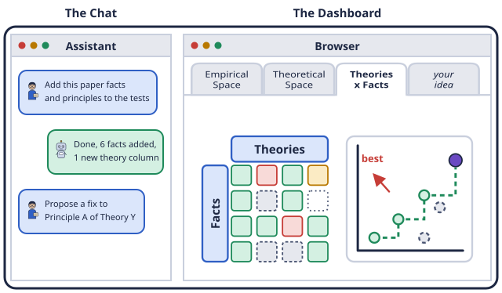
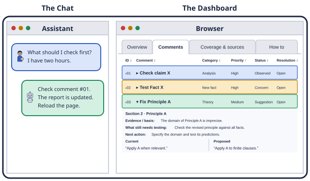

linglib
A library of facts and theories in semantics, all formalized in Lean.550+ works in semantics covered

AI can accelerate some aspects of research in linguistics. The tools below offer inspiration for your everyday work in semantics. Use with caution, and with creativity! You can use prompts to transform your work or the tools themselves. And you may use these as mere inspirations in your own workflow.
A library of facts and theories in semantics, all formalized in Lean.550+ works in semantics covered

Work on your facts and principles.Requires an AI assistant of your own.

Review your paper.Requires an AI assistant of your own.
